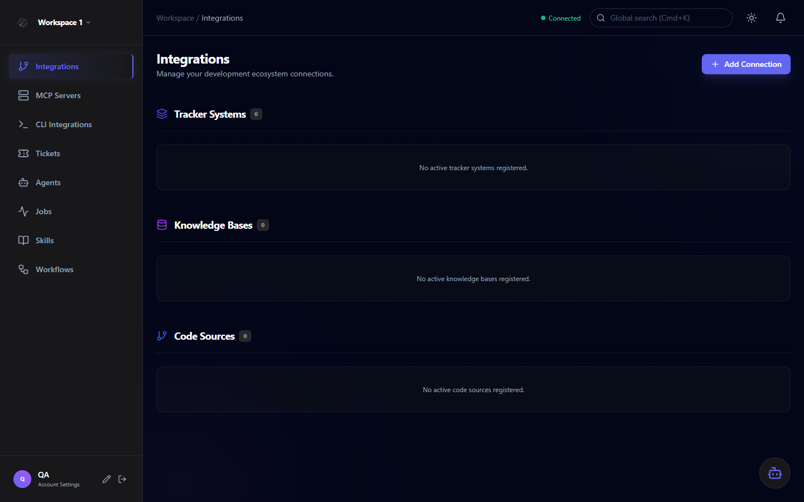
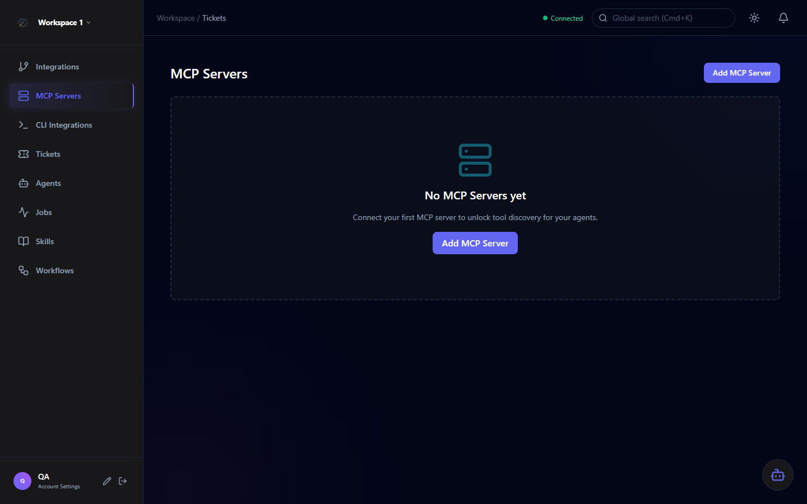
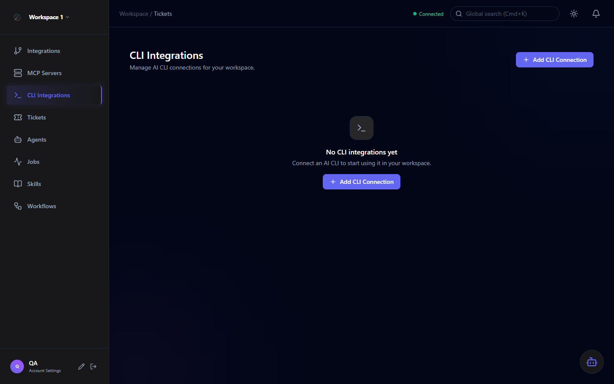

Integrations & MCP
Orchestra connects to external platforms through two integration types: native integrations (Jira, GitHub, GitLab) and MCP server integrations. Both are stored in the same Integration entity and surface as tool sources for agents.

Native Integrations
Native integrations connect to external issue trackers and source control platforms. Once connected, Orchestra syncs tickets in real time and makes the integration's tools available for agents.
Connect to any Jira instance. Sync issues as tickets. Requires a Jira API token and the base URL of your instance.
- Issue sync (create, update, comment)
- ADF content conversion
- Filter query support
Connect to GitHub repositories. Sync Issues and Pull Requests. Agents can create comments, review PRs, and open branches.
- Issues & Pull Requests
- Branch creation
- PR review comments
Connect to GitLab projects (Cloud or Self-managed). Sync Issues and Merge Requests with full tool access for agents.
- Issues & Merge Requests
- Comment & approve MRs
- Pipeline status
Required fields
| Provider | Required Fields |
|---|---|
| Jira Cloud | Base URL, Username (email), API Token |
| Jira On-Premise | Base URL, Username, Personal Access Token |
| GitHub | Repository URL, Personal Access Token (PAT) |
| GitLab | Project URL, Personal Access Token |
MCP Servers
Model Context Protocol (MCP) servers are registered as tool sources. Once connected, Orchestra discovers their available tools and adds them to the workspace tool catalog — making them available for agent authorization.

Unified storage: Both native integrations and MCP servers are stored in the Integration table. The IsMcpBacked flag distinguishes them. This keeps the data model simple while supporting both paradigms.
MCP Transport Types
Connect to MCP servers exposed over HTTP/HTTPS. Suitable for remote or containerized MCP services.
| Endpoint | Full URL to the MCP server |
| Auth | None, Basic, or Bearer token |
| API Key | Optional; stored encrypted |
Launch MCP servers as local processes communicating via standard I/O. Ideal for CLI-based MCP tools.
| Command | Executable command to launch the server |
| Env Vars | Environment variables passed to the process |
| Timeout | 30-second discovery timeout |
CLI Integrations — GitHub Copilot
CLI integrations connect a CLI-based AI runtime directly to Orchestra as an agent execution engine. Currently supports GitHub Copilot.

Orchestra queries the Copilot subscription to discover available models and presents them as options in the agent model selector.
Configure reasoning effort level per CLI integration: Low (fast, cheaper), Medium (balanced), or High (thorough, slower).
Choose between read-only (safe for search/review agents) or read/write (for coding agents that modify files).
Tool Discovery & Sync
When you add an MCP server, Orchestra automatically discovers its tools. You can also manually trigger re-discovery:
Fill in the server form. Orchestra calls POST /v1/integrations/mcp/discover to test connectivity and list tools before saving.
On success, McpToolSeedingService creates a ToolCategory for the server and a ToolAction for each discovered tool — automatically classified by danger level.
Discovered tools appear in the tool authorization panel of the agent form under the MCP Tools section.
If the MCP server adds or removes tools, click Sync Tools on the server card to re-discover and update the tool catalog.